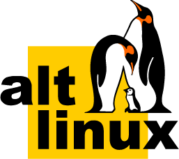

Дистрибутивы
ALT
ALT — русский дистрибутив Linux, идущий своим путём.
Fedora
Fedora — дистрибутив, который предлагает новейшие технологии от сообщества Red Hat.
Debian

Debian — стабильный и надежный дистрибутив, который является основой для многих других.
Arch

Arch представляет собой легкий и гибкий дистрибутив, предназначенный для опытных пользователей.